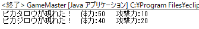
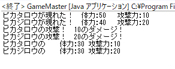

オブジェクト
Javaにおいてオブジェクトとは、複数の変数やメソッドの情報をひとまとりにして管理できる一つの変数。これを活用することで、プログラムの可読性をあげることや、プログラムの修正を効率的に行うことなどが期待できる。
オブジェクトの生成
2つのクラスを準備する。1つは生成するオブジェクトを管理するクラスPikachuと、もう1つはPikachumainメソッドでオブジェクトを生成し操作するクラスGameMaster。個々のピカチュウそれぞれに、体力
hp、攻撃力atk、ニックネームnicknameの設定をもたせる。
それを実現するためにPikachuの4～6行目でフィールド変数を設定する。このフィールド変数は(基本的に)オブジェクトごとに別々の値を取ることができる。次に、コンストラクタを設定する。これはオブジェクト生成時に必ず処理される部分で、主にフィールド変数の値を設定(これをフィールド変数の初期化という)するのに用いられる。
そして、
GameMasterの5,6行目で2匹のピカチュウ、ピカタロウとピカジロウを生成を行う。見ての通り、各個体ごとに設定できる。ここまで正しく書けていれば
GameMasterを実行することで、以下のメッセージが表示される。
では、ピカチュウ同士を闘わせてみる。
Pikachuに攻撃用のメソッドattackToPikachu(Pikachu target)とステータス表示のメソッドprintStatus()を追加した。
GameMasterでこれらのメソッドを作動させる。一度書いてしまえは複雑な処理を一行で実行できるのがメソッドの利点。ここまで正しく書けていれば以下のメッセージが表示される。